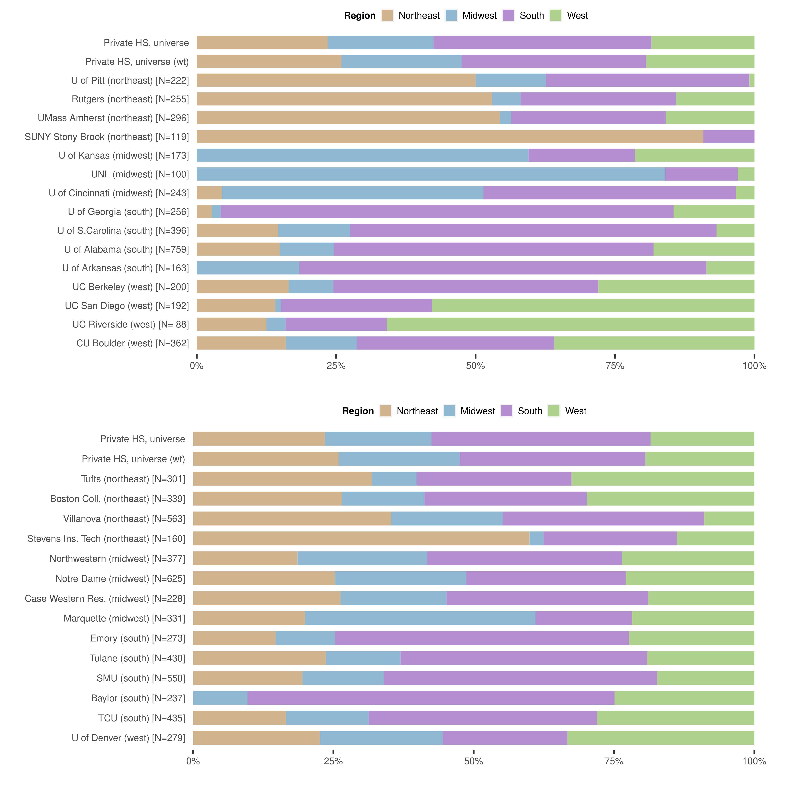

| Classification | University | Rank | 25th Percentile SAT/ACT Composite Score | 75th Percentile SAT/ACT Composite Score | In-State Tuition + Fees | Out-of-State Tuition + Fees | Total Enrolled Freshmen | Percent Out-of-State Freshmen |
Percent Pell Recipients | Percent White Freshmen | Percent Black Freshmen | Percent Asian Freshmen | Percent Hispanic Freshmen | Percent International Freshmen |
|---|---|---|---|---|---|---|---|---|---|---|---|---|---|---|
| Public Research | UC Berkeley | 22 | 1,316 | 1,527 | $13,807 | $41,076 | 6,252 | 24.4% | 19.4% | 25.6% | 1.8% | 42.7% | 13.8% | 9.3% |
| UC San Diego | 35 | 1,193 | 1,455 | $13,946 | $41,215 | 5,748 | 26.5% | 30.7% | 15.5% | 1.5% | 34.4% | 20.6% | 21.6% | |
| U of Georgia | 47 | 1,165 | 1,360 | $11,890 | $30,502 | 5,433 | 12.3% | 20.3% | 68.0% | 8.1% | 12.4% | 5.8% | 1.6% | |
| U of Pitt | 58 | 1,202 | 1,395 | $19,028 | $30,414 | 5,644 | 30.6% | 20.3% | 68.5% | 7.3% | 9.3% | 4.3% | 3.6% | |
| Rutgers | 63 | 1,110 | 1,350 | $14,689 | $30,684 | 6,465 | 17.8% | 27.0% | 35.5% | 6.0% | 31.3% | 12.1% | 10.4% | |
| UMass Amherst | 66 | 1,135 | 1,332 | $15,301 | $32,914 | 4,679 | 26.9% | 21.5% | 61.0% | 3.8% | 12.5% | 6.0% | 8.1% | |
| UC Riverside | 88 | 956 | 1,200 | $13,880 | $41,150 | 5,358 | 2.2% | 56.6% | 10.1% | 4.0% | 31.1% | 47.2% | 2.5% | |
| SUNY Stony Brook | 88 | 1,163 | 1,373 | $9,197 | $26,817 | 2,934 | 25.8% | 34.6% | 27.8% | 5.9% | 28.8% | 11.0% | 16.5% | |
| CU Boulder | 103 | 1,126 | 1,331 | $11,785 | $35,852 | 6,421 | 47.2% | 14.6% | 66.3% | 1.5% | 5.6% | 12.5% | 7.5% | |
| U of S.Carolina | 118 | 1,135 | 1,321 | $11,706 | $31,562 | 5,110 | 53.2% | 15.4% | 82.1% | 5.0% | 3.0% | 4.3% | 1.2% | |
| U of Kansas | 124 | 1,070 | 1,300 | $10,781 | $26,503 | 4,233 | 42.8% | 23.4% | 72.1% | 4.3% | 4.5% | 8.7% | 4.6% | |
| UNL | 133 | 1,027 | 1,262 | $8,725 | $23,558 | 4,860 | 29.9% | 23.9% | 75.6% | 3.1% | 2.5% | 7.2% | 6.3% | |
| U of Alabama | 143 | 1,053 | 1,351 | $10,701 | $27,544 | 7,559 | 68.1% | 17.0% | 80.6% | 8.0% | 1.3% | 5.3% | 0.8% | |
| U of Cincinnati | 143 | 1,063 | 1,265 | $11,242 | $26,914 | 6,913 | 13.1% | 26.7% | 74.9% | 9.0% | 3.8% | 3.5% | 2.4% | |
| U of Arkansas | 160 | 1,057 | 1,283 | $9,014 | $23,678 | 4,972 | 51.0% | 19.5% | 78.7% | 3.9% | 2.6% | 8.5% | 1.0% | |
| Private National | Northwestern | 9 | 1,413 | 1,527 | $51,975 | $51,975 | 1,985 | 69.8% | 17.8% | 46.1% | 5.0% | 16.7% | 13.6% | 9.7% |
| Notre Dame | 19 | 1,395 | 1,553 | $50,780 | $50,780 | 2,046 | 94.5% | 11.9% | 67.8% | 4.5% | 5.3% | 10.7% | 5.9% | |
| Emory | 21 | 1,313 | 1,481 | $49,011 | $49,011 | 1,358 | 85.5% | 17.5% | 40.9% | 7.1% | 18.8% | 10.8% | 16.1% | |
| Tufts | 30 | 1,375 | 1,515 | $53,585 | $53,585 | 1,336 | 80.2% | 10.2% | 54.9% | 4.8% | 13.4% | 6.7% | 11.4% | |
| Boston Coll. | 35 | 1,297 | 1,460 | $52,426 | $52,426 | 2,254 | 76.6% | 12.8% | 61.4% | 2.8% | 10.7% | 11.1% | 6.8% | |
| Tulane | 41 | 1,277 | 1,416 | $52,134 | $52,134 | 1,856 | 87.6% | 7.8% | 76.0% | 4.3% | 5.7% | 5.8% | 4.3% | |
| Case Western Res. | 42 | 1,314 | 1,501 | $47,020 | $47,020 | 1,265 | 75.7% | 10.0% | 48.1% | 4.3% | 19.6% | 6.2% | 15.6% | |
| Villanova | 53 | 1,280 | 1,420 | $50,366 | $50,366 | 1,678 | 83.1% | 9.7% | 76.0% | 4.7% | 5.5% | 6.9% | 1.5% | |
| SMU | 66 | 1,244 | 1,416 | $51,467 | $51,467 | 1,522 | 61.6% | 10.2% | 66.4% | 5.6% | 5.9% | 11.0% | 6.3% | |
| Baylor | 76 | 1,163 | 1,329 | $42,931 | $42,931 | 3,503 | 35.3% | 17.4% | 65.4% | 6.2% | 5.5% | 15.3% | 2.9% | |
| U of Denver | 80 | 1,166 | 1,359 | $47,445 | $47,445 | 1,399 | 67.5% | 14.6% | 73.5% | 2.0% | 4.3% | 9.8% | 5.6% | |
| TCU | 80 | 1,125 | 1,321 | $43,610 | $43,610 | 1,888 | 56.6% | 11.2% | 72.9% | 4.7% | 3.1% | 13.3% | 3.7% | |
| Stevens Ins. Tech | 80 | 1,274 | 1,447 | $49,914 | $49,914 | 737 | 38.8% | 15.5% | 65.4% | 2.7% | 14.7% | 10.0% | 4.6% | |
| Marquette | 88 | 1,101 | 1,296 | $39,318 | $39,318 | 2,005 | 71.4% | 19.0% | 68.0% | 4.9% | 8.1% | 13.3% | 2.5% |
Title
Characteristics of universities in analysis sample
Characteristics of universities in analysis sample compared to data collection sample
Public research universities
|
Selective private universities
|
|||||||||||
|---|---|---|---|---|---|---|---|---|---|---|---|---|
Analysis sample (N=15)
|
Data collection sample (N=102)
|
Analysis sample (N=14)
|
Data collection sample (N=57)
|
|||||||||
| 25th percentile | 50th percentile | 75th percentile | 25th percentile | 50th percentile | 75th percentile | 25th percentile | 50th percentile | 75th percentile | 25th percentile | 50th percentile | 75th percentile | |
| 25th Percentile SAT/ACT Composite Score | 1,060 | 1,126 | 1,164 | 984 | 1,061 | 1,135 | 1,185 | 1,278 | 1,314 | 1,191 | 1,289 | 1,391 |
| 75th Percentile SAT/ACT Composite Score | 1,292 | 1,332 | 1,366 | 1,204 | 1,282 | 1,350 | 1,373 | 1,433 | 1,496 | 1,375 | 1,472 | 1,542 |
| In-State Tuition + Fees | $10,741 | $11,785 | $13,913 | $9,100 | $10,750 | $13,322 | $47,126 | $50,140 | $51,848 | $47,020 | $49,914 | $51,661 |
| Out-of-State Tuition + Fees | $26,866 | $30,502 | $34,383 | $23,433 | $27,589 | $32,989 | $47,126 | $50,140 | $51,848 | $47,020 | $49,914 | $51,661 |
| Total Enrolled Freshmen | 4,916 | 5,433 | 6,336 | 3,416 | 4,528 | 5,850 | 1,368 | 1,767 | 2,000 | 1,305 | 1,585 | 2,005 |
| Percent Out-of-State Freshmen | 21.1% | 26.9% | 45.0% | 15.4% | 25.8% | 39.8% | 63.1% | 73.6% | 82.4% | 66.4% | 76.6% | 87.6% |
| Percent Pell Recipients | 19.5% | 21.5% | 26.8% | 20.3% | 25.5% | 33.3% | 10.2% | 12.4% | 16.9% | 12.8% | 14.2% | 16.5% |
| Percent White Freshmen | 31.6% | 68.0% | 75.2% | 45.3% | 61.7% | 72.6% | 56.5% | 65.9% | 71.7% | 41.1% | 49.3% | 63.8% |
| Percent Black Freshmen | 3.4% | 4.3% | 6.6% | 3.1% | 5.6% | 8.9% | 4.3% | 4.7% | 5.0% | 4.0% | 5.3% | 7.1% |
| Percent Asian Freshmen | 3.4% | 9.3% | 29.9% | 3.1% | 6.6% | 13.2% | 5.5% | 7.0% | 14.3% | 5.9% | 13.2% | 18.8% |
| Percent Hispanic Freshmen | 5.5% | 8.5% | 12.3% | 5.5% | 8.6% | 16.8% | 7.6% | 10.7% | 12.8% | 9.0% | 10.7% | 13.3% |
| Percent International Freshmen | 2.0% | 4.6% | 8.7% | 1.6% | 3.1% | 7.1% | 3.8% | 5.7% | 9.0% | 6.0% | 9.8% | 12.3% |
One-mode public university percent matrix
| U of Alabama (N=759) |
U of S.Carolina (N=396) |
CU Boulder (N=362) |
UMass Amherst (N=296) |
U of Georgia (N=256) |
Rutgers (N=255) |
U of Cincinnati (N=243) |
U of Pitt (N=222) |
UC Berkeley (N=200) |
UC San Diego (N=192) |
U of Kansas (N=173) |
U of Arkansas (N=163) |
SUNY Stony Brook (N=119) |
UNL (N=100) |
UC Riverside (N=88) |
|
|---|---|---|---|---|---|---|---|---|---|---|---|---|---|---|---|
| U of Alabama (N=759) | 100.0 | 71.7 | 58.0 | 50.3 | 66.0 | 47.1 | 51.0 | 56.3 | 56.0 | 52.1 | 53.8 | 61.3 | 36.1 | 31 | 38.6 |
| U of S.Carolina (N=396) | 37.4 | 100.0 | 42.8 | 36.5 | 54.7 | 29.0 | 45.3 | 44.6 | 42.0 | 30.7 | 33.5 | 35.0 | 22.7 | 20 | 21.6 |
| CU Boulder (N=362) | 27.7 | 39.1 | 100.0 | 38.9 | 34.4 | 29.8 | 28.4 | 41.4 | 38.5 | 51.0 | 42.8 | 31.3 | 17.6 | 25 | 31.8 |
| UMass Amherst (N=296) | 19.6 | 27.3 | 31.8 | 100.0 | 22.3 | 36.5 | 11.1 | 25.2 | 22.5 | 29.7 | 10.4 | 8.6 | 47.9 | 4 | 20.5 |
| U of Georgia (N=256) | 22.3 | 35.4 | 24.3 | 19.3 | 100.0 | 9.4 | 30.0 | 21.6 | 32.0 | 19.8 | 22.5 | 36.2 | 5.9 | 13 | 18.2 |
| Rutgers (N=255) | 15.8 | 18.7 | 21.0 | 31.4 | 9.4 | 100.0 | 14.4 | 33.3 | 20.5 | 22.4 | 11.6 | 3.1 | 40.3 | 10 | 11.4 |
| U of Cincinnati (N=243) | 16.3 | 27.8 | 19.1 | 9.1 | 28.5 | 13.7 | 100.0 | 25.2 | 16.5 | 12.5 | 16.8 | 22.7 | 4.2 | 18 | 9.1 |
| U of Pitt (N=222) | 16.5 | 25.0 | 25.4 | 18.9 | 18.8 | 29.0 | 23.0 | 100.0 | 20.5 | 14.6 | 18.5 | 16.0 | 22.7 | 15 | 12.5 |
| UC Berkeley (N=200) | 14.8 | 21.2 | 21.3 | 15.2 | 25.0 | 16.1 | 13.6 | 18.5 | 100.0 | 31.8 | 17.3 | 16.0 | 7.6 | 8 | 22.7 |
| UC San Diego (N=192) | 13.2 | 14.9 | 27.1 | 19.3 | 14.8 | 16.9 | 9.9 | 12.6 | 30.5 | 100.0 | 16.8 | 13.5 | 9.2 | 3 | 39.8 |
| U of Kansas (N=173) | 12.3 | 14.6 | 20.4 | 6.1 | 15.2 | 7.8 | 11.9 | 14.4 | 15.0 | 15.1 | 100.0 | 38.0 | 0.0 | 61 | 9.1 |
| U of Arkansas (N=163) | 13.2 | 14.4 | 14.1 | 4.7 | 23.0 | 2.0 | 15.2 | 11.7 | 13.0 | 11.5 | 35.8 | 100.0 | 0.8 | 24 | 10.2 |
| SUNY Stony Brook (N=119) | 5.7 | 6.8 | 5.8 | 19.3 | 2.7 | 18.8 | 2.1 | 12.2 | 4.5 | 5.7 | 0.0 | 0.6 | 100.0 | 0 | 4.5 |
| UNL (N=100) | 4.1 | 5.1 | 6.9 | 1.4 | 5.1 | 3.9 | 7.4 | 6.8 | 4.0 | 1.6 | 35.3 | 14.7 | 0.0 | 100 | 0.0 |
| UC Riverside (N=88) | 4.5 | 4.8 | 7.7 | 6.1 | 6.2 | 3.9 | 3.3 | 5.0 | 10.0 | 18.2 | 4.6 | 5.5 | 3.4 | 0 | 100.0 |
One-mode private university percent matrix
| Notre Dame (N=625) |
Villanova (N=563) |
SMU (N=550) |
TCU (N=435) |
Tulane (N=430) |
Northwestern (N=377) |
Boston Coll. (N=339) |
Marquette (N=331) |
Tufts (N=301) |
U of Denver (N=279) |
Emory (N=273) |
Baylor (N=237) |
Case Western Res. (N=228) |
Stevens Ins. Tech (N=160) |
|
|---|---|---|---|---|---|---|---|---|---|---|---|---|---|---|
| Notre Dame (N=625) | 100.0 | 60.0 | 53.3 | 58.2 | 51.9 | 59.4 | 69.3 | 69.8 | 58.8 | 58.8 | 53.1 | 41.8 | 58.3 | 49.4 |
| Villanova (N=563) | 54.1 | 100.0 | 52.9 | 51.5 | 50.7 | 56.8 | 61.4 | 61.9 | 53.5 | 51.3 | 53.8 | 42.6 | 62.3 | 64.4 |
| SMU (N=550) | 46.9 | 51.7 | 100.0 | 66.7 | 64.0 | 64.5 | 64.3 | 45.6 | 62.8 | 63.4 | 64.5 | 65.0 | 58.8 | 55.0 |
| TCU (N=435) | 40.5 | 39.8 | 52.7 | 100.0 | 46.3 | 46.9 | 49.6 | 45.3 | 46.8 | 54.1 | 44.7 | 56.1 | 43.0 | 41.2 |
| Tulane (N=430) | 35.7 | 38.7 | 50.0 | 45.7 | 100.0 | 58.1 | 51.0 | 31.1 | 63.1 | 50.9 | 52.4 | 33.3 | 57.5 | 35.0 |
| Northwestern (N=377) | 35.8 | 38.0 | 44.2 | 40.7 | 50.9 | 100.0 | 50.7 | 34.4 | 56.1 | 49.8 | 46.9 | 31.6 | 53.5 | 34.4 |
| Boston Coll. (N=339) | 37.6 | 36.9 | 39.6 | 38.6 | 40.2 | 45.6 | 100.0 | 40.2 | 52.5 | 48.4 | 41.4 | 27.0 | 43.9 | 37.5 |
| Marquette (N=331) | 37.0 | 36.4 | 27.5 | 34.5 | 24.0 | 30.2 | 39.2 | 100.0 | 25.6 | 34.8 | 19.0 | 26.2 | 28.9 | 26.9 |
| Tufts (N=301) | 28.3 | 28.6 | 34.4 | 32.4 | 44.2 | 44.8 | 46.6 | 23.3 | 100.0 | 40.9 | 42.9 | 21.9 | 47.4 | 41.2 |
| U of Denver (N=279) | 26.2 | 25.4 | 32.2 | 34.7 | 33.0 | 36.9 | 39.8 | 29.3 | 37.9 | 100.0 | 30.0 | 24.1 | 31.6 | 27.5 |
| Emory (N=273) | 23.2 | 26.1 | 32.0 | 28.0 | 33.3 | 34.0 | 33.3 | 15.7 | 38.9 | 29.4 | 100.0 | 16.5 | 43.0 | 26.2 |
| Baylor (N=237) | 15.8 | 17.9 | 28.0 | 30.6 | 18.4 | 19.9 | 18.9 | 18.7 | 17.3 | 20.4 | 14.3 | 100.0 | 21.9 | 14.4 |
| Case Western Res. (N=228) | 21.3 | 25.2 | 24.4 | 22.5 | 30.5 | 32.4 | 29.5 | 19.9 | 35.9 | 25.8 | 35.9 | 21.1 | 100.0 | 25.6 |
| Stevens Ins. Tech (N=160) | 12.6 | 18.3 | 16.0 | 15.2 | 13.0 | 14.6 | 17.7 | 13.0 | 21.9 | 15.8 | 15.4 | 9.7 | 18.0 | 100.0 |
For private universities, the percent of high schools visited by public universities
| Notre Dame (N=625) |
Villanova (N=563) |
SMU (N=550) |
TCU (N=435) |
Tulane (N=430) |
Northwestern (N=377) |
Boston Coll. (N=339) |
Marquette (N=331) |
Tufts (N=301) |
U of Denver (N=279) |
Emory (N=273) |
Baylor (N=237) |
Case Western Res. (N=228) |
Stevens Ins. Tech (N=160) |
|
|---|---|---|---|---|---|---|---|---|---|---|---|---|---|---|
| U of Alabama (N=759) | 52.2 | 51.0 | 56.9 | 59.8 | 51.2 | 48.8 | 54.9 | 53.5 | 46.5 | 48.7 | 60.1 | 57.8 | 53.5 | 48.8 |
| U of S.Carolina (N=396) | 30.7 | 36.2 | 40.5 | 43.9 | 37.0 | 36.1 | 35.7 | 31.1 | 35.2 | 35.5 | 44.0 | 38.8 | 34.6 | 36.9 |
| CU Boulder (N=362) | 34.4 | 33.2 | 40.2 | 46.4 | 41.4 | 42.4 | 42.2 | 40.5 | 46.2 | 49.8 | 38.1 | 42.2 | 42.5 | 35.0 |
| UMass Amherst (N=296) | 21.0 | 24.3 | 22.7 | 24.8 | 26.5 | 21.5 | 33.0 | 21.1 | 31.9 | 27.2 | 20.1 | 9.3 | 17.1 | 41.2 |
| U of Georgia (N=256) | 17.9 | 22.7 | 28.4 | 27.8 | 27.7 | 27.3 | 21.8 | 13.3 | 23.6 | 17.2 | 32.2 | 32.5 | 20.2 | 20.0 |
| Rutgers (N=255) | 19.0 | 22.9 | 14.0 | 16.8 | 15.8 | 16.4 | 20.4 | 16.9 | 17.3 | 16.5 | 17.2 | 7.6 | 20.2 | 41.9 |
| U of Cincinnati (N=243) | 17.3 | 21.7 | 18.7 | 19.3 | 16.7 | 22.8 | 16.8 | 22.4 | 14.0 | 20.4 | 22.0 | 17.3 | 18.0 | 15.6 |
| U of Pitt (N=222) | 20.5 | 27.5 | 18.0 | 18.9 | 19.1 | 19.6 | 20.1 | 19.0 | 21.3 | 15.8 | 17.2 | 15.6 | 27.2 | 30.6 |
| UC Berkeley (N=200) | 16.3 | 19.0 | 21.1 | 21.4 | 24.4 | 27.9 | 21.8 | 13.9 | 28.9 | 19.7 | 27.8 | 16.0 | 27.2 | 17.5 |
| UC San Diego (N=192) | 17.1 | 14.4 | 18.2 | 22.3 | 17.4 | 22.0 | 25.4 | 17.5 | 28.9 | 25.4 | 18.3 | 18.1 | 21.9 | 20.6 |
| U of Kansas (N=173) | 14.4 | 15.1 | 16.2 | 20.7 | 13.5 | 17.0 | 15.0 | 27.2 | 12.0 | 24.7 | 10.3 | 23.2 | 16.2 | 7.5 |
| U of Arkansas (N=163) | 8.8 | 11.5 | 19.6 | 19.8 | 15.8 | 13.3 | 9.4 | 13.6 | 10.0 | 14.3 | 10.6 | 35.4 | 15.4 | 8.1 |
| SUNY Stony Brook (N=119) | 8.0 | 10.7 | 5.8 | 7.4 | 5.6 | 4.0 | 6.8 | 8.5 | 8.6 | 5.0 | 3.7 | 0.4 | 7.9 | 21.9 |
| UNL (N=100) | 6.9 | 8.2 | 7.1 | 8.5 | 5.1 | 8.2 | 6.2 | 12.7 | 4.7 | 9.7 | 2.9 | 8.9 | 7.0 | 1.9 |
| UC Riverside (N=88) | 5.6 | 5.0 | 4.9 | 6.7 | 5.6 | 7.4 | 6.8 | 5.1 | 8.0 | 6.1 | 4.0 | 7.6 | 6.6 | 3.8 |
For public universities, the percent of high schools visited by private universities
| U of Alabama (N=759) |
U of S.Carolina (N=396) |
CU Boulder (N=362) |
UMass Amherst (N=296) |
U of Georgia (N=256) |
Rutgers (N=255) |
U of Cincinnati (N=243) |
U of Pitt (N=222) |
UC Berkeley (N=200) |
UC San Diego (N=192) |
U of Kansas (N=173) |
U of Arkansas (N=163) |
SUNY Stony Brook (N=119) |
UNL (N=100) |
UC Riverside (N=88) |
|
|---|---|---|---|---|---|---|---|---|---|---|---|---|---|---|---|
| Notre Dame (N=625) | 43.0 | 48.5 | 59.4 | 44.3 | 43.8 | 46.7 | 44.4 | 57.7 | 51.0 | 55.7 | 52.0 | 33.7 | 42.0 | 43 | 39.8 |
| Villanova (N=563) | 37.8 | 51.5 | 51.7 | 46.3 | 50.0 | 50.6 | 50.2 | 69.8 | 53.5 | 42.2 | 49.1 | 39.9 | 50.4 | 46 | 31.8 |
| SMU (N=550) | 41.2 | 56.3 | 61.0 | 42.2 | 60.9 | 30.2 | 42.4 | 44.6 | 58.0 | 52.1 | 51.4 | 66.3 | 26.9 | 39 | 30.7 |
| TCU (N=435) | 34.3 | 48.2 | 55.8 | 36.5 | 47.3 | 28.6 | 34.6 | 36.9 | 46.5 | 50.5 | 52.0 | 52.8 | 26.9 | 37 | 33.0 |
| Tulane (N=430) | 29.0 | 40.2 | 49.2 | 38.5 | 46.5 | 26.7 | 29.6 | 36.9 | 52.5 | 39.1 | 33.5 | 41.7 | 20.2 | 22 | 27.3 |
| Northwestern (N=377) | 24.2 | 34.3 | 44.2 | 27.4 | 40.2 | 24.3 | 35.4 | 33.3 | 52.5 | 43.2 | 37.0 | 30.7 | 12.6 | 31 | 31.8 |
| Boston Coll. (N=339) | 24.5 | 30.6 | 39.5 | 37.8 | 28.9 | 27.1 | 23.5 | 30.6 | 37.0 | 44.8 | 29.5 | 19.6 | 19.3 | 21 | 26.1 |
| Marquette (N=331) | 23.3 | 26.0 | 37.0 | 23.6 | 17.2 | 22.0 | 30.5 | 28.4 | 23.0 | 30.2 | 52.0 | 27.6 | 23.5 | 42 | 19.3 |
| Tufts (N=301) | 18.4 | 26.8 | 38.4 | 32.4 | 27.7 | 20.4 | 17.3 | 28.8 | 43.5 | 45.3 | 20.8 | 18.4 | 21.8 | 14 | 27.3 |
| U of Denver (N=279) | 17.9 | 25.0 | 38.4 | 25.7 | 18.8 | 18.0 | 23.5 | 19.8 | 27.5 | 37.0 | 39.9 | 24.5 | 11.8 | 27 | 19.3 |
| Emory (N=273) | 21.6 | 30.3 | 28.7 | 18.6 | 34.4 | 18.4 | 24.7 | 21.2 | 38.0 | 26.0 | 16.2 | 17.8 | 8.4 | 8 | 12.5 |
| Baylor (N=237) | 18.1 | 23.2 | 27.6 | 7.4 | 30.1 | 7.1 | 16.9 | 16.7 | 19.0 | 22.4 | 31.8 | 51.5 | 0.8 | 21 | 20.5 |
| Case Western Res. (N=228) | 16.1 | 19.9 | 26.8 | 13.2 | 18.0 | 18.0 | 16.9 | 27.9 | 31.0 | 26.0 | 21.4 | 21.5 | 15.1 | 16 | 17.0 |
| Stevens Ins. Tech (N=160) | 10.3 | 14.9 | 15.5 | 22.3 | 12.5 | 26.3 | 10.3 | 22.1 | 14.0 | 17.2 | 6.9 | 8.0 | 29.4 | 3 | 6.8 |
Order 2 ego network of University of Notre Dame

Number of HS visits by public research universities
Number of HS visits by selective private universities
Proportional HS visits by public research universities
Proportional HS visits by selective private universities
One-mode network for all universities
Geographic region of visited private high schools

Religious affiliation of visited private high schools
High school ranking of visited private high schools
Racial composition of visited HS, public universities
Racial composition of visited HS, private universities
Racial composition in the South, public universities
Racial composition in the South, private universities
Slide w/ citation
Subtitle
Heres some text:
More things:
- Blah
References
Hill, L. D. 2008. School Strategies and the "College-Linking" Process: Reconsidering the Effects of High Schools on College Enrollment. Journal Article. Sociology of Education 81 (1): 5376. <Go to ISI>://WOS:000256634400003.
Murnane, Richard J., and Sean F. Reardon. 2018. Long-Term Trends in Private School Enrollments by Family Income. AERA Open 4 (1): 124. https://doi.org/10.1177/2332858417751355.